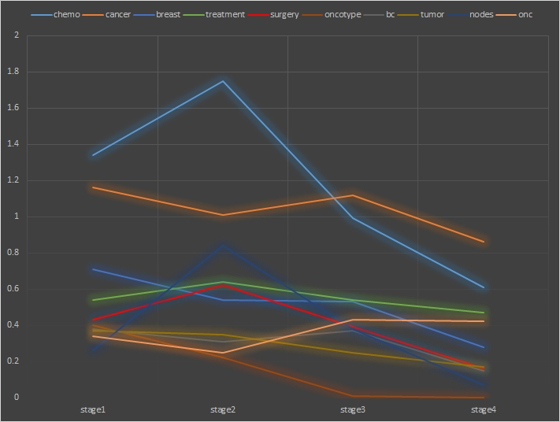

Narrative Persuasion in Health Promotion
In my earlier research, I examined the strategic use of narrative persuasion in health promotion and disease prevention. For example, my PhD dissertation examined the effects of several language and content features of. At the same time, it also identified a serial mediation relationship which distinguishes narratives from other ordinary persuasion effort. I recently started a project investigating the impact of the linguistic cues and rhetoric features of narratives in online social support solicitation built on my earlier research on narrative persuasion and online social support.
Publications
Chen, M., Xu, X. Y., & Zhao, L. (In progress). How to tell a better story: Examining narrative coherence and identification linguistic cues in soliciting online support.
Bell, R. A., Chen, M., & Taylor, L. (Upcoming). Narratives of prevention and affliction in type 2 diabetes: Mechanisms of influence in a sample of middle-aged women. Journal of Health Communication
Chen, M., & Bell, R. A. (2021). A meta-analysis of the impact of point of view on narrative processing and persuasion in health messaging Psychology & Health 1, 1-18
Chen, M., & Xiao, Z. W. (2018). Examining the effectiveness of a fear appeal message regarding calling while driving: The role of perceived behavioral control and subjective social norms. International Journal of Health & Media Research 2, 35-50
Chen, M., Bell, R. A., & Taylor, L. D. (2017). Persuasive effects of point of view, protagonist competence, and similarity in a health narrative about type 2 diabetes. Journal of Health Communication 22, 702-712
Chen, M., Bell, R.A., & Taylor, L.A. (2016). Narrator point of view and persuasion in health narratives: The role of similarity, identification, and susceptibility. Journal of Health Communication 21, 908-918
Berger, C. R., Ha, Y., & Chen, M. (2019). Story appraisal theory: From story kernel appraisals to implications and impact. Communication Research 46(3), 303-332
Chen, M., McGlone, M.S., Bell, R.A. (2015). Persuasive effects of linguistic agency assignments and point of view in narrative health messages about colon cancer. Journal of Health Communication 20, 977-988
New Media and Health Management
This line of research investigates the role played by new media in people’s health management and communication. Some of my recent projects use natural language as a window glancing into breast cancer patients’ online social support solicitation and disease coping.

Publications
Chen, M., & Zhao, L. (2020). Mapping breast cancer survivors’ psychosocial coping along disease trajectory: A language approach. Journal of Health Psychology 1, 1-14
Chen, M., Bell, R. A., & Barnett, G. (2020). From network positions to language use: Understanding the effects of brokerage and closure structures from a linguistic perspective. Health Communication 1, 1-8
Chen, M., & Peña, J. (2018). The effects of physical poses on risk-taking behaviors and signature size after playing with a motion-controlled video game. Health & New Media Research 2, 120-133
Peña, J., & Chen, M. (2017). With great power comes great responsibility: Superhero primes and expansive poses influence prosocial behavior after a motion-controlled game task. Computers in Human Behavior 76, 378-385
Peña, J., & Chen, M. (2017). Playing with power: Power poses affect enjoyment, social presence, controller responsiveness, and arousal when playing natural motion controller games. Computers in Human Behavior 71, 428-435
Li, S., Feng, B., Chen, M., Bell, R.A. (2015). Physician review websites: effects of the proportion and position of negative reviews on readers' willingness to choose the doctor. Journal of Health Communication 20, 453-461
Public Health Crisis Journalism
The outbreak of COVID-19 has confronted the world with considerable political, economic, and public health crises, igniting heated debate in various fields worldwide. This project conducts a massive scale examination of COVID-19 media coverage from different perspectives and investigates how the media coverage impacts the epidemiological situation.
Publications
Chen, M., & Zhao, L. (In Progress). Linking media coverage of COVID-19 with incidence rate: A computational content analysis of COVID-19 news along cognition, affection, and behavior dimensions.
Chen, M., Bell, R. A., & Zhao, L. (In Progress). The spread of true and false information about COVID-19 in the digital age: A massive-scale automated analysis of themes, language, and diffusion.